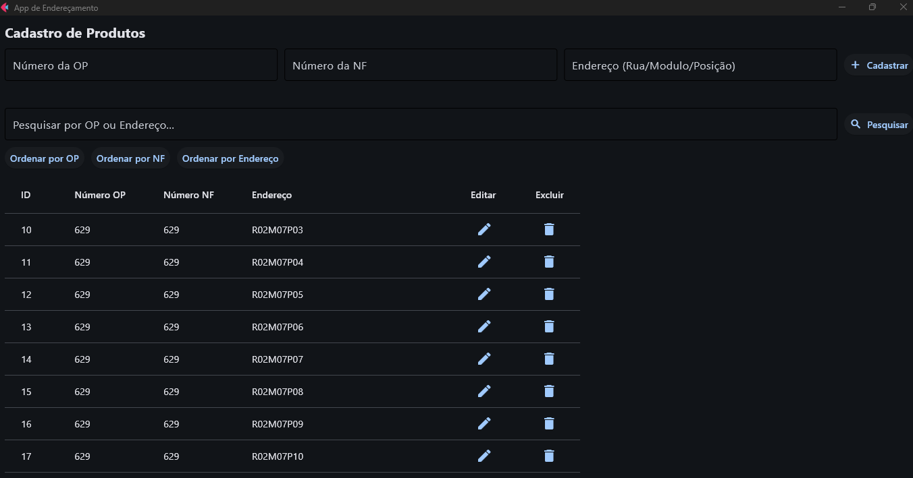

Sistema de Endereçamento

Apresentação do Projeto
O Sistema de Endereçamento e Cadastro de Produtos foi idealizado e desenvolvido para solucionar um dos maiores gargalos logísticos: a localização rápida e precisa de itens armazenados em galpões de distribuição e estoques comerciais.
A ferramenta centraliza o registro do produto juntamente com suas coordenadas físicas de armazenamento (Corredor, Prateleira, Nível/Pátio). Isso reduz drasticamente o tempo de "picking" (separação de pedidos) e evita perda de inventário por peças extraviadas ou armazenadas incorretamente.
Principais Funcionalidades
- Cadastro Centralizado: Interface amigável para registro e atualização instantânea dos itens estocados.
- Geração de Códigos de Alocação: Geração automatizada da posição exata com base nas regras do galpão logístico.
- Busca Rápida: Motor de busca por nome, SKU, ou categoria que devolve em milissegundos o trajeto/posição da mercadoria.
- Dashboard Administrativo: Monitoramento de espaços livres, níveis críticos de ocupação e histórico de movimentações.
Impacto e Resultados
Esta solução de software automatizou processos que, anteriormente, dependiam de planilhas complexas e falhas humanas. A implantação do sistema representou um ganho estimado de produtividade e uma diminuição notável de perdas de produtos associadas à falha de estocagem, melhorando o giro do inventário e garantindo eficiência operacional de ponta-a-ponta.